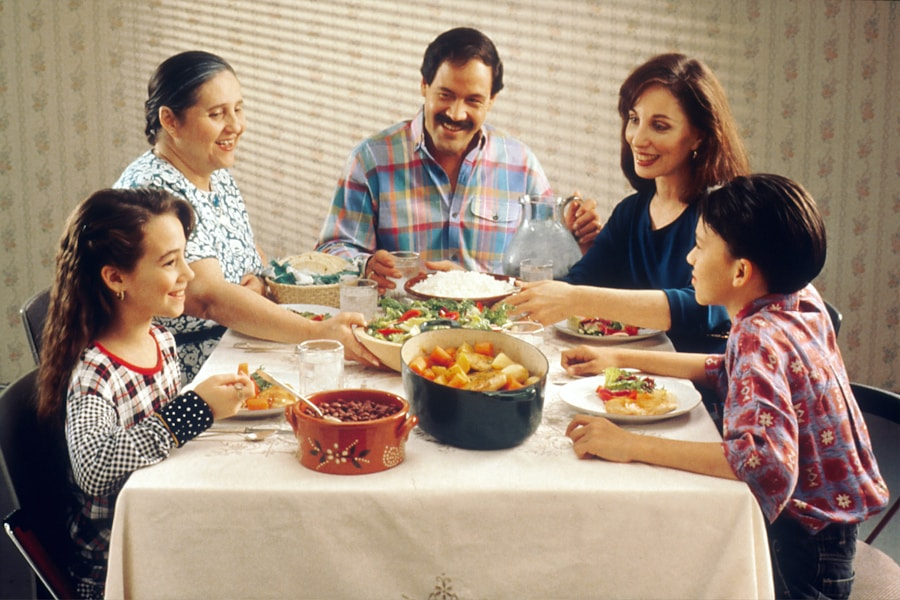

Feature Article — Golden Week 2026
名古屋 GW・連休
おすすめグルメ12選
2026年のゴールデンウィーク、名古屋で過ごす予定の方へ。 帰省中の家族、デートのカップル、地元のグループ利用にも。 8ブランドを運営する現役飲食店経営者が、連休中も満足度が高いお店だけを厳選しました。 名古屋めしの老舗から、駅近の使い勝手のいい店まで12軒。
GWグルメの予約のコツ
- 連休中は通常より2倍〜3倍の予約混雑。2〜3週間前までに確保を
- 5月5日（子どもの日）は家族連れが集中。個室があると安心
- 名駅・栄エリアは観光客で混雑しやすい。少し外した金山や大須も狙い目
- 老舗・人気店は昼の部でも満席になる。ランチ利用なら11時台がベスト
- キャンセルポリシーは要確認（連休中は前日キャンセル料発生の店が多い）
Top Picks — GW・連休におすすめの12店
Google評価4.5以上、名古屋の「行く価値あり」な店だけを厳選。名古屋めしの老舗から駅近の話題店までバランスよく選んでいます。

味噌とんちゃん屋の伏見展開は矢場町・栄ホルモンと共に名古屋のホルモン食文化を市内で広くカバーしている。伏見というビジネス街での展開はサラリーマンのランチ・仕事帰りの需要を意識した立地選定として合理的。

名古屋名物の手羽先は各店が独自のタレで差別化を図るが、あっさり系タレと掘りごたつの居心地が局地的な固定客を生んでいる。チェーン化せず住吉という単立地に絞った判断を評価して掲載した。


燻銀ブランドの栄展開は金山・伏見に続く拠点。炉端焼きの演出と個室の組み合わせを栄でも維持しながら4.7評価を獲得しているのはブランドの品質管理が多店舗でも機能していることを示す。


「完全個室の夜カフェ」という業態は、アルコール提供のある飲食店と純喫茶の中間を狙った設計。女子会・デート・誕生日など記念シーンに特化したポジションで食べログ4.9を維持しているのは、空間設計と接客トーンの一貫性が高いか…

ハチベエブランドの栄3丁目展開は矢場町・金山に続く第三の拠点として海鮮居酒屋の名古屋市内カバレッジを広げている。各店で4.8評価を維持していることはブランド全体の仕入れ管理と接客水準が均一化されている証明。

かっちゃんブランドの金山展開は栄・名古屋駅に続く第三の拠点として金山エリアの飲み需要をカバーしている。各店で4.7評価を維持しているのはブランド全体の品質管理と価格戦略の一貫性が機能していることの証明。
連休中の名古屋をもっと楽しむコツ
- 名古屋観光と組み合わせるなら：熱田神宮 → あつた蓬莱軒 のゴールデンコース
- 名古屋城金シャチ横丁の山本屋総本家は観光後の休憩に最適
- 栄エリアはショッピング後のディナーに便利。個室のあるお店を選べば家族連れも安心
- 名駅エリアは新幹線待ちでも使える。帰省ラストの夕食に